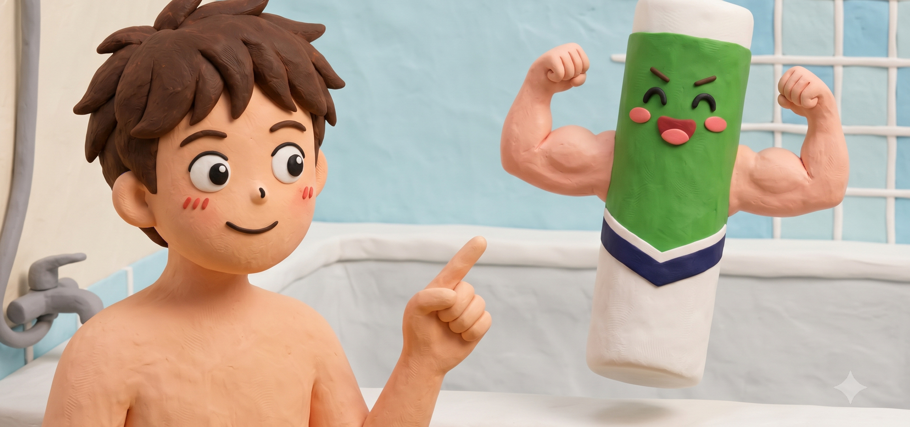
아묻따 KCC알고, 묻고, 따져보는 KCC 제품
EP.01 욕실 실리콘은 왜 자꾸 까매질까?
KCC 욕실·방균용 실란트
AI 요약 | 욕실 실란트 한눈에 보기
우리가 흔히 실리콘이라고 부르는 틈새 재료는 실란트입니다. 물과 습기에 반복적으로 노출되는 욕실에는 곰팡이를 억제하는 방균 성능이 중요합니다. 실란트는 틈을 막는 동시에 자재의 움직임을 흡수하므로, 색상뿐 아니라 사용 장소와 환경에 맞는 제품을 골라야 합니다.
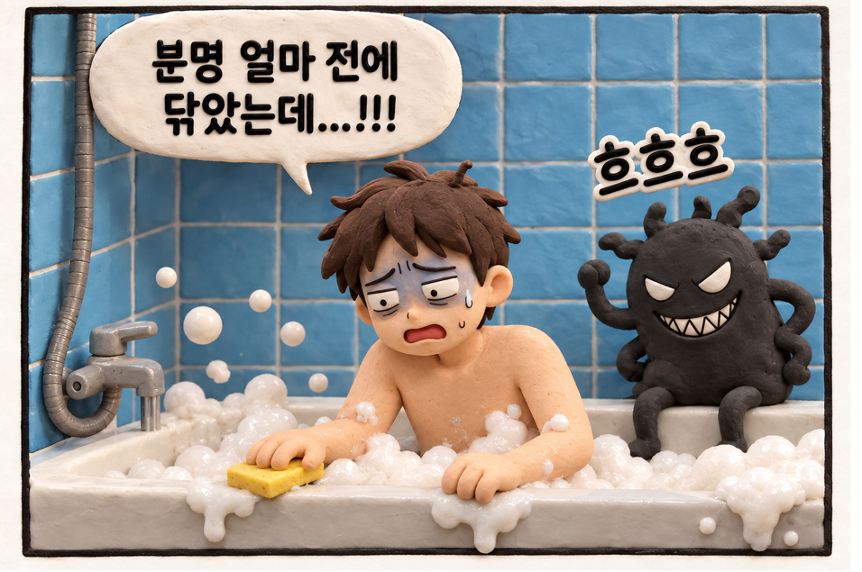
청소의 문제일까, 재료의 문제일까?
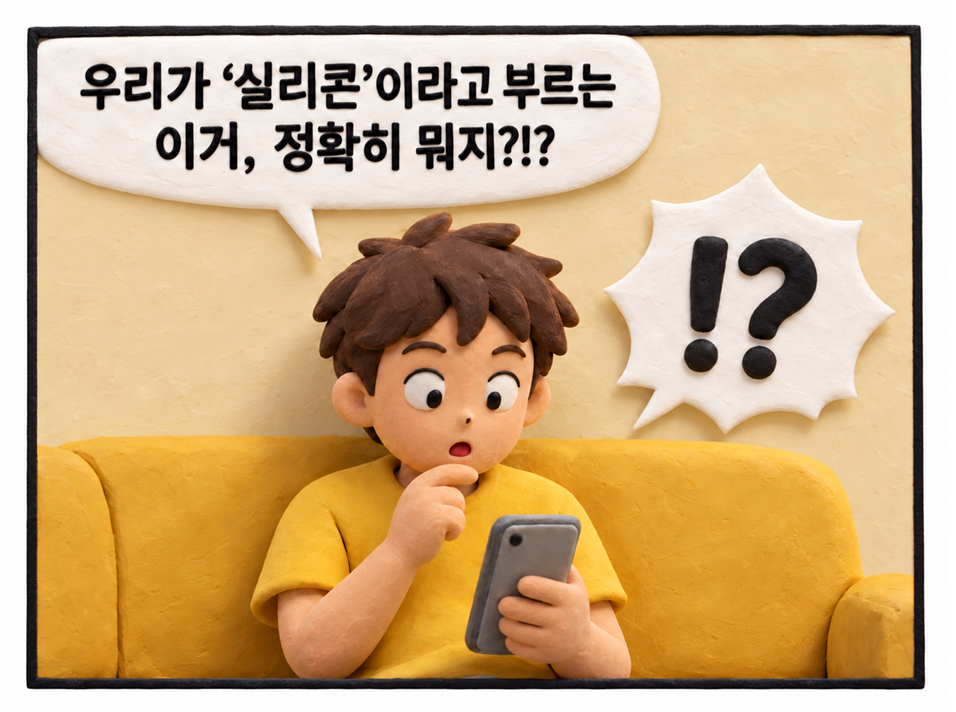
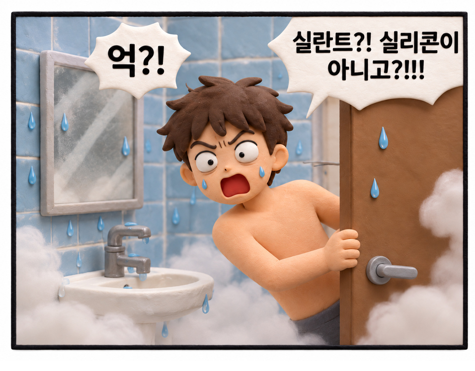
그래서 욕조나 세면대 주변의 접합부에는 틈을 밀봉하는
실런트(Sealant)가 사용된다.
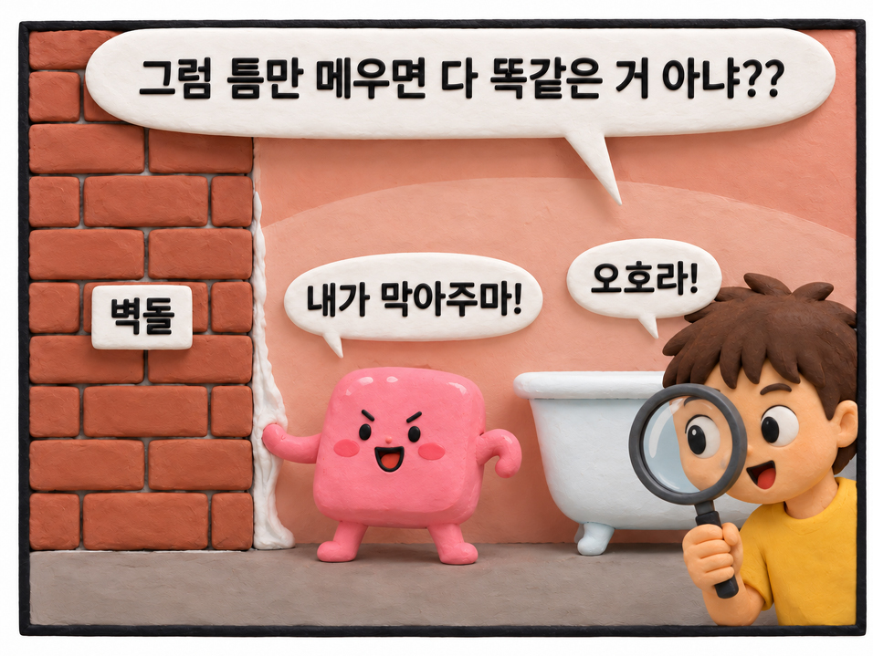
틈과 접합부를 메우고 밀봉하는 소재다.
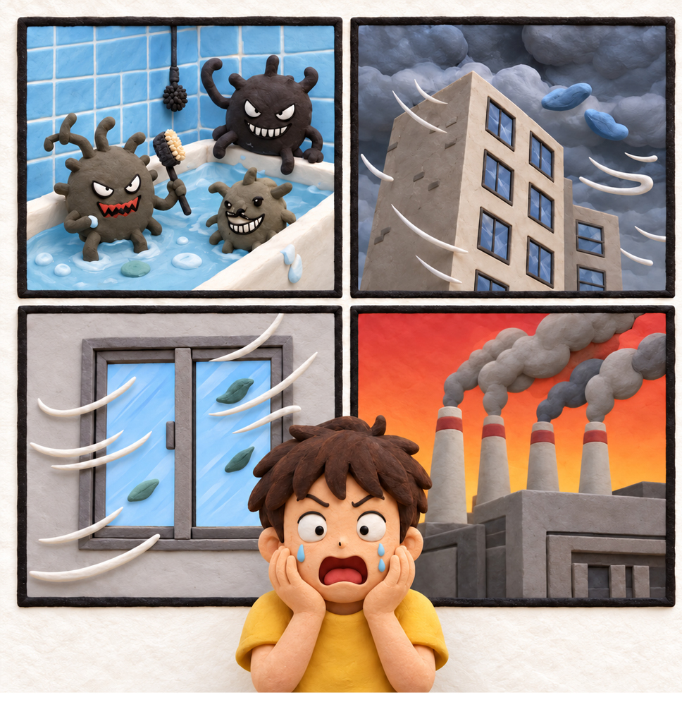
욕실처럼 습기가 많고 곰팡이가 발생하기 쉬운 장소라면
내곰팡이 성능을 고려한 욕실용 제품을 선택해야 한다.
하얗다고 다 같은 실리콘이 아니었네.
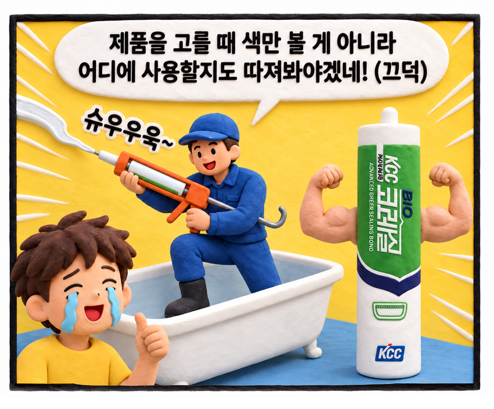
사용할 수 있는 욕실·방균용 실란트 제품군을 운영한다.
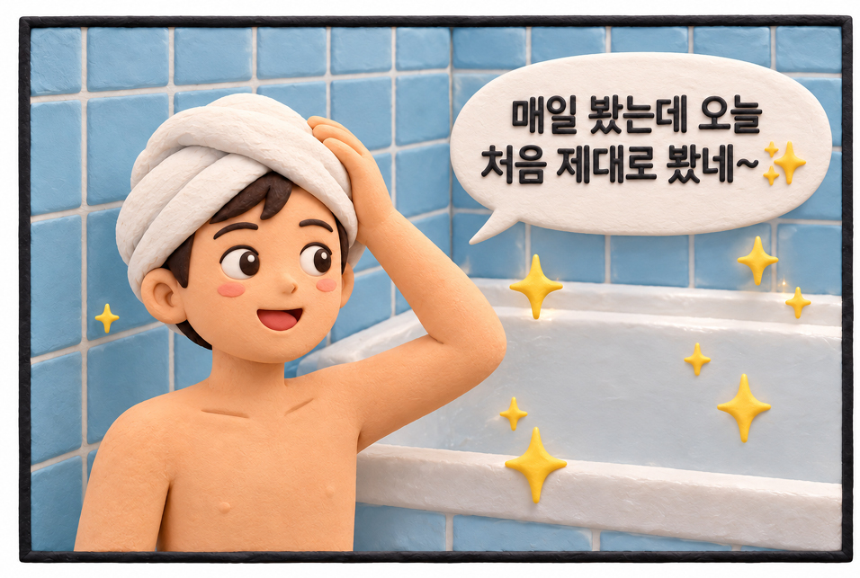
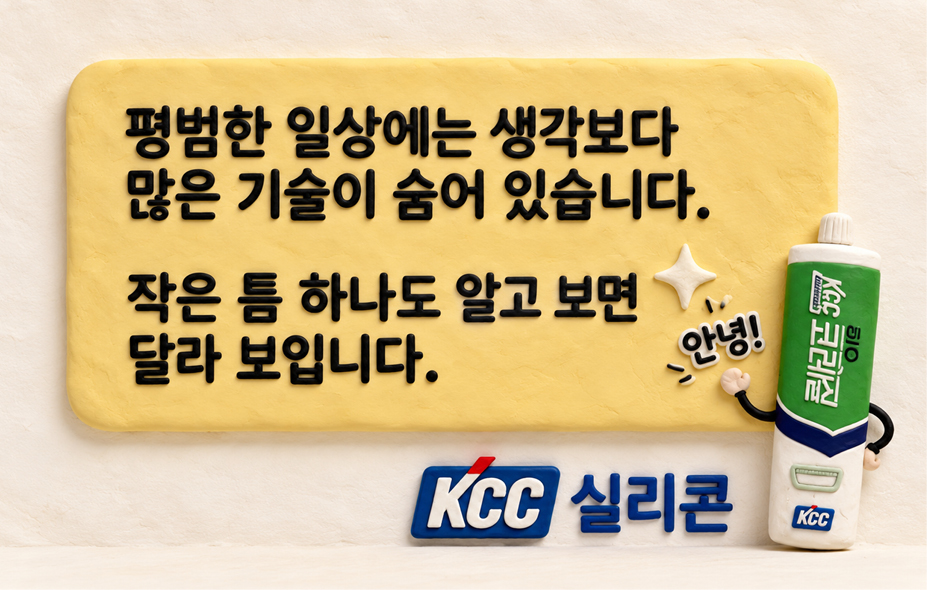
PRODUCT NOTE
- 오늘 등장한 KCC 기술
- KCC 건축용 바이오 실란트 (항곰팡이·고탄성 접착 실링 기술)
- 무엇인가
- 건축물 자재 간의 연결 부위나 틈새에 채워 넣어 수분, 공기, 먼지 등의 침투를 막아주고 건물의 변형을 흡수하는 고성능 건축용 실리콘 코킹재입니다.
- 어디에 사용되는가
- 습기 노출이 많은 욕실(타일·욕조·세면대 테두리), 주방 싱크대 틈새, 유리 및 창호 조인트, 실내 인테리어 마감 부위 등.
- 어떤 역할을 하는가
- 우수한 방균(항곰팡이) 성능: 곰팡이 생성을 억제하여 위생적이고 깨끗한 환경을 유지합니다.
- 강력한 접착력 및 탄성: 온도 변화나 진동에 따른 자재의 수축·팽창을 유연하게 흡수하여 틈새 벌어짐을 방지합니다.
- 방수·밀폐: 물과 습기의 침투를 차단하여 내부 자재의 부식과 손상을 예방합니다.
- 관련 제품 / 기술
- KCC Koraseal SL907 (바이오 실란트): 우수한 항곰팡이 성능을 갖춘 대표적인 욕실·주방용 실리콘 실란트.
- KCC SL886: 고기능성 창호 및 유리용 실란트.
- 담당부서 확인 정보
- 담당 부서: KCC 실란트영업팀 / 중앙연구소 실란트연구분과
- 문의 번호: 02-3480-5000 (KCC 대표 번호)
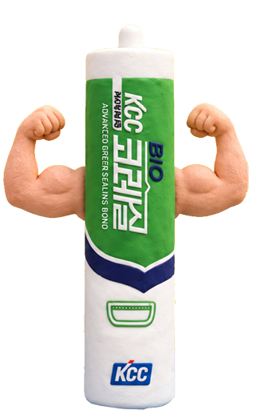
이 이야기의 키워드
#KCC실리콘#욕실실리콘#바이오실란트#항곰팡이#방균#방수·밀폐#생활 속 기술#아묻따KCC
이번 이야기는 어떠셨나요?
DISCOVER
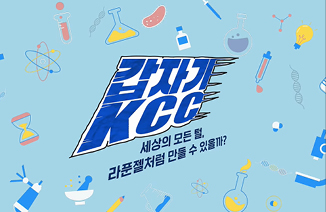
[유튜브]
곰팡이 안 생기는 욕실 실리콘 셀프 시공 꿀팁 대공개!
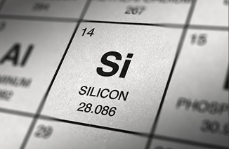
‘집안 틈새를 부탁해!’
장소별 KCC 실란트 종류 총정리
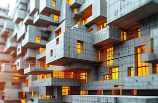
집도 레고처럼?
모듈 사이의 빈틈을 채우는 KCC실리콘
댓글 3
kim*
욕실에 매일 보던 실리콘이 이렇게 다양한 역할을 하는지 몰랐어요!
min*
곰팡이 방지뿐 아니라 건물의 변형까지 흡수한다니 신기해요.
lee*
집에서 흔히 보는 제품이라 그런지 KCC 기술이 더 친근하게 느껴지네요!